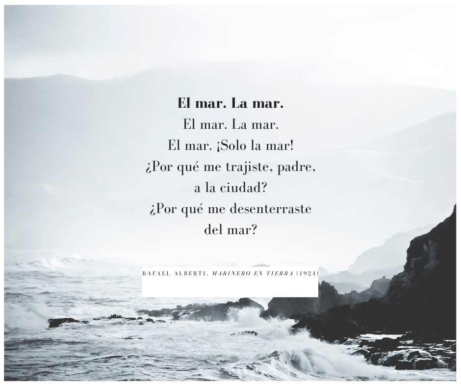

Poems
Amanecer en silencio
poema 1
En la orilla del día amanece la brisa,
susurra el silencio, la luz se desliza.
Cada hoja que tiembla, cada voz del mar,
lleva un secreto que invita a soñar.

poema 2
Caminas despacio, el tiempo no pesa,
la vida es un río que fluye y regresa.
Guarda este instante, tan puro y tan fiel,
pues todo comienzo se escribe en tu piel.
poema 3
La montaña respira su aroma profundo,
como un eco callado que abraza al mundo.
Los pájaros pintan en vuelos dorados
mensajes de aurora, latidos alados.
poema 4
Camino despacio, la sombra se alarga,
el tiempo es un río que nunca se embarga.
Los pasos se mezclan con canto y rocío,
la tierra me nombra, me siento su hijo.
poema 5
Y cuando la tarde se acerque a la orilla,
recuerda este alba que aún brilla y brilla.
poema 6
El sol se levanta, la vida florece,
en cada mirada el milagro aparece.
Que nunca se apague la chispa del día,
que el mundo despierte en calma y poesía.
poema 7
La luna se asoma, bordando la espuma,
las estrellas despiertan su canto al mar.
En cada reflejo se esconde una duda,
en cada silencio, un nuevo empezar.
poema 8
Las olas susurran historias antiguas,
de barcos sin nombre y de amor sin final.
El viento responde, ligero y sin prisa,
y el cielo se pinta de un gris mineral.
poema 9
Vuelan los sueños, se enredan las risas,
la noche se cubre de magia y cristal.
Un faro vigila la costa dormida,
y el mundo respira un instante inmortal.